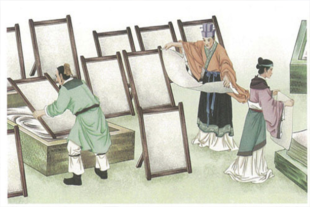
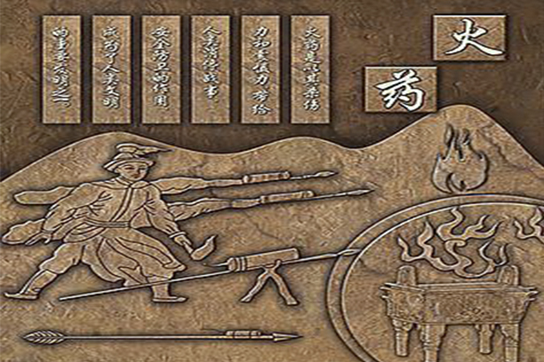
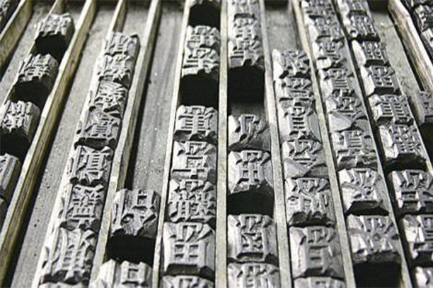
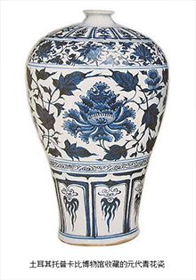
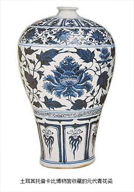

Burn it!
China
The Great Blessing of the People
and the Great Power of the Country

The Great Blessing of the People
and the Great Power of the Country


Papermaking

Compass

 gunpowder
 Printing
Chinese porcelain has deeply influenced the political civilization of some countries in the world. In some countries, it had the function of "currency" and could be equivalent to human's "life". It has fundamentally changed the material way of life of people in some countries of the world. It enriches and influences the spiritual life of people in some countries of the world.
 

Imperial examination system